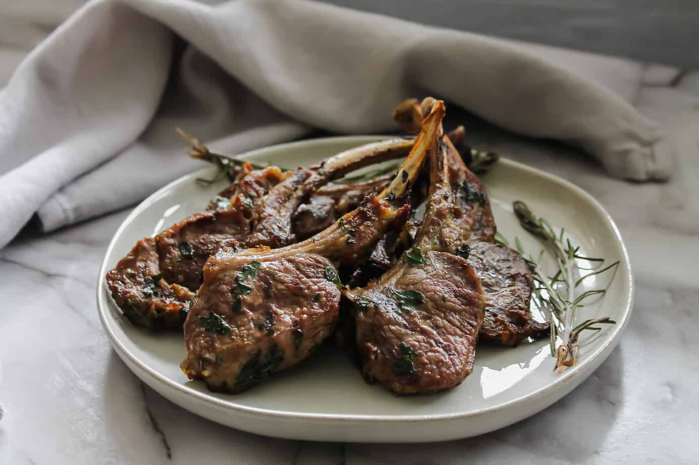

Lambchops

Finally we have Lambchops
I know they make look delicious but I can assure you it would take a martian to be able to keep one down.
Indredients
- 1 pound lamb rib chops
- 2 tablespoons minced fresh rosemary
- 2 teaspoons salt
- 1 teaspoon freshly ground black pepper
- 1 garlic clove, minced
- 4 tablespoons extra virgin olive oil, divided
Steps
- In a small bowl, mix the rosemary, salt, pepper, garlic, and 2 tablespoons of the olive oil together. Coat the lamb chops with the mixture, massaging it into the meat with your fingers. If you are working with double rib chops, cover and let stand at room temperature for 30 to 45 minutes.
- Heat the remaining 2 tablespoons olive oil in an oven-proof sauté pan over high heat. When the oil is shimmering hot, sear the chops. Sear double rib chops on all sides about 2 to 3 minutes per side. If you are working with single rib chops, sear only on two sides, and only a minute (or less) on each side if you want the result to be rare or medium rare.
- At this point, if you want your lamb chops rare, they are likely cooked enough.
- If you would like your chops more cooked, you can put them in a 400°F oven for 3 to 5 minutes, or keep them in the hot pan, lower the heat to warm, and cover the pan for a few minutes.
- When done, remove the chops from the pan, cover with foil and let rest 3 to 5 minutes before serving.